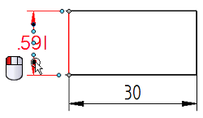
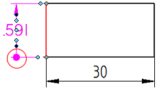
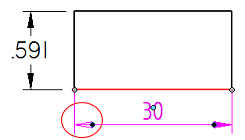

Set terminator size and shape
You can change the terminator shape directly from a selected dimension. You also can modify terminator shape, size, and other options in the Dimension Properties dialog box.
Change the terminator shape on a selected dimension
-
Click a dimension terminator, a dimension line, or a projection line to display all of the handles on the dimension. Do not click the dimension text.
-
Click the terminator handle on the side of the dimension that you want to change.
Example:Terminator handle on an ANSI dimension

Terminator handle on an ISO dimension

-
From the menu, choose Terminator Type.
-
From the list of terminators, choose a new terminator type.
An image of each terminator type is shown in the list along with a description.
Example:Terminator Type=Dot

Terminator Type=Arrow (Open)

Set dimension terminator shape and size by editing properties
-
Right-click a dimension and choose Properties from the shortcut menu.
-
In the Dimension Properties dialog box, click the Terminator and Symbol tab.
-
Specify both the start and end terminators using the Measure type and Measure size controls.
-
Select a shape from the Measure type list.
For example, select the Arrow (hollow) or the Circle option.
Tip:When you select a Measure type, the Origin type is updated to the same shape. This is a quick way to set both terminator shapes at once.
-
Type a value in the Measure size text box and press Enter.
The default terminator size is 1 x Font Size.
Tip:When you enter a Measure size, the Origin size is updated to the same value. This is a quick way to set both terminator sizes at once.
Tip:By setting the Origin specifications after the Measure specifications, you can assign unique display properties to the start and end terminators.
-
Rather than editing individual dimensions, you can set all default options for dimensions using the Styles command to modify the Dimension style type.
How do I
Edit a 2D dimension (sketch, profile, draft)Move a dimension
Display a half dimension
Change dimension behavior
Change the orientation of a dimension
Break a dimension projection line
Remove breaks from a dimension projection line
Change the parent of a dimension by dragging it
Reattach a dimension or annotation using the Attach Dimension command
Add and remove jogs on a dimension
Activate a part for dimensioning in a draft quality view
Learn more
Dimension edit handlesSnap indicators for dimensions
Look up more details
Attach Dimension commandAdd Projection Line Break command
Remove Projection Line Break command
Activate Part command